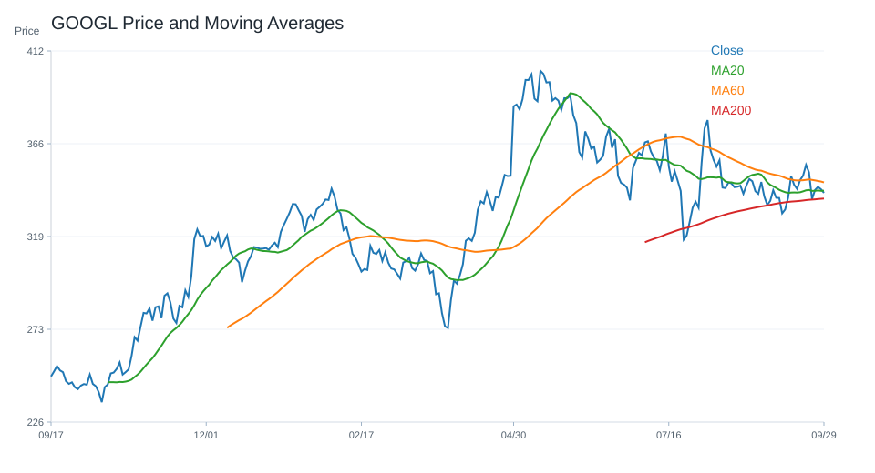
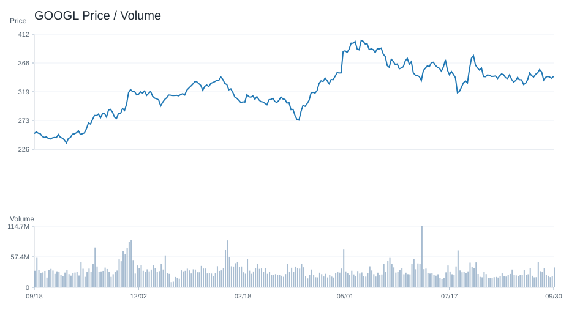
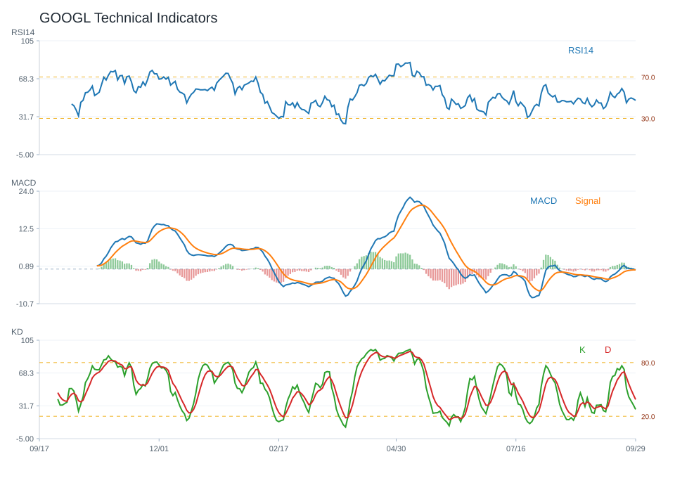
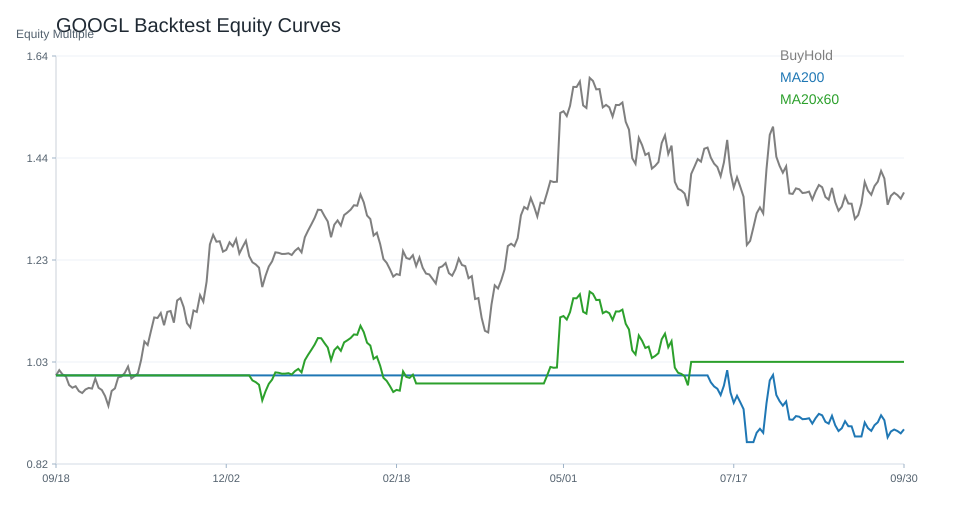

20 日
0.33%60 日
-6.54%觀察等級
降低關注市場資料
2026-10-01- 成交量33,269,300.00
- 20 日均線342.57
- 60 日均線345.57
- 200 日均線338.74
- 距 52 週高點-15.99%
- 距 52 週低點42.98%
技術指標
Python 計算- RSI1445.39
- MACD hist-0.29
- KD K/D21.83 / 30.71
- ADX13.48
- 布林上緣354.33
- 布林下緣330.81
量價與事件
規則式分析- 量價型態量能中性
- 量價分數0
- 20 日量比1.22
- OBV 20 日變化4.80%
- 事件偏向資料不足
- 事件分數資料不足
研究訊號與觀察等級
不是買賣建議降低關注；研究訊號 偏空，分數 -4。
部分條件偏弱，研究關注度應低於正向標的。
- 跌破 20 日均線
- 跌破 200 日均線
- RSI 位於中性偏強區
- MACD histogram 為負
- KD 偏弱
- 量價型態：量能中性
- 量價未出現明確偏多或偏空結構
- 總經風險對評分扣分
回測摘要
歷史資料研究| 策略 | CAGR | Sharpe | 最大回撤 | 勝率 | 交易次數 |
|---|---|---|---|---|---|
| 價格高於 200 日均線 | 21.72% | 0.92 | -21.85% | 53.52% | 9 |
| 20/60 日均線交叉 | 24.45% | 1.02 | -18.04% | 53.45% | 7 |
| 買進持有 | 36.81% | 1.15 | -29.81% | 53.71% | 1 |
圖表
價格 / 量價 / 技術 / 回測GOOGL 價格均線

GOOGL 量價關係

GOOGL 技術指標

GOOGL 回測
